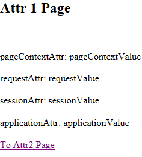
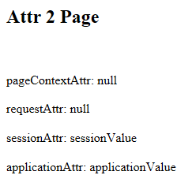

之前雀巢水是JSP开发的，直接在项目中就开始写业务，没有好好从基础去学，最近有时间好好打基础。
JSP是简化 Servlet 编写的一种技术，它将 Java 代码和HTML语句混合在同一个文件中编写，只对网页中的要动态产生的内容采用 Java 代码来编写，而对固定不变的静态内容采用普通静态 HTML 页面的方式编写。
Java Server Page 服务器端网页：在HTML页面中编写Java代码的页面。扩展名必须是.jsp
例：打印时间(需要在顶部引入java时间类的包)
1 2 3 4 5 6
| <body> <% Date date = new Date(); System.out.println(date); %> </body>
|
JSP 可以放在 WEB 应用程序中的除了 WEB-INF 及其子目录外的其他任何目录中，JSP页面的访问路径与普通HTML页面的访问路径形式也完全一样。
JSP生成的java文件也间接继承了HttpServlet(去看源码可以发现)
JSP本质上是一个Servlet。
每个JSP页面在第一次被访问时，JSP引擎将它翻译成一个Servlet源程序，接着再把这个Servlet源程序编译成Servlet的class类文件。然后再由WEB容器(Servlet引擎)像调用普通Servlet程序一样的方式来装载和解释执行这个由JSP页面翻译成的Servlet程序。
JSP页面的隐含变量(没有声明就可以使用的)
1 2 3 4 5 6 7 8 9 10 11 12 13
| public void _jspService(HttpServletRequest request, HttpServletResponse response) throws java.io.IOException, ServletException { PageContext pageContext = null; HttpSession session = null; ServletContext application = null; ServletConfig config = null; JspWriter out = null; Object page = this; // ... // 使用 <% %> 编写的代码在此设置。可以用到 // request,response,pageContext,session,application,config,out,page // 这8个隐含对象。(实际上还可以使用一个叫 exception 的隐含对象) }
|
- request：HttpServletRequest的一个对象
- response：HttpServletResponse的一个对象
pageContext：PageContext的一个对象。页面的上下文，可以从该对象中获取到其他8个隐含对象，也可以从中获取到当前页面的其他信息。
session：HttpSession的一个对象。代表浏览器和服务器的一次会话。
- application：ServletContext的对象。代表当前 WEB 应用。
config：ServletConfig对象(几乎不使用)。若需要访问当前JSP配置的初始化参数，需要通过映射的地址才可以。
out：Jspwriter的对象。调用out.println()可以直接把字符串打印到浏览器上。
- page：指向当前JSP对应的Servlet对象的引用，只能调用Object方法，开发时不用。
- exception：在声明了
page指令的isErrorPage="true"时才可以使用。
基本语法
例(基本结构)：
1 2 3 4 5 6 7 8 9 10 11 12 13 14 15 16 17 18 19 20 21 22 23 24
| <%@ page language="java" contentType="text/html; charset=UTF-8" pageEncoding="UTF-8"%> <%@ page import="java.io.*,java.util.*, javax.servlet.*" %> <!DOCTYPE html PUBLIC "-//W3C//DTD HTML 4.01 Transitional//EN" "http://www.w3.org/TR/html4/loose.dtd"> <html> <head> <meta http-equiv="Content-Type" content="text/html; charset=UTF-8"> <title>Insert title here</title> </head> <body> <% Date date = new Date(); System.out.println(date); %> <% String str = date.toString(); // 沒有聲明就可以使用的對象（隱含對象） String name = request.getParameter("name"); System.out.println(name); System.out.println(session.getId()); System.out.println(application.getInitParameter("password")); %> </body> </html>
|
脚本片段的一种写法：
1 2 3 4 5 6 7 8 9 10 11 12 13
| <% String ageStr = request.getParameter("age"); Integer age = Integer.parseInt(ageStr); if(age >= 18) { %> 成人... <% } else { %> 未成人... <% } %>
|
JSP声明
JSP声明将Java代码封装在<%！和 %>之中，它里面的代码将被插入进Servlet的_jspService方法的外面，所以，JSP声明可用于定义JSP页面转换成的Servlet程序的静态代码块、成员变量和方法 。
在JSP页面中几乎从不这样使用
JSP注释
<!-- 被注释的内容 -->可以阻止java代码执行。
和属性相关的方法
- Object getAttribute(String name): 获取指定的属性
- Enumeration getAttributeNames(): 获取所有的属性的名字组成的Enumeration对象
- removeAttribute(String name): 移除指定的属性
- void setAttribute(String name, Object o): 设置属性
pageContext, request, session, application对象都有这些方法。它们也称为域对象
- pageContext: 属性的作用范围仅限于当前的JSP页面
- request: 属性的作用范围仅限于同一个请求(在有转发的情况下可以跨页面获取属性值)
- session: 属性的作用范围限于一次会话：浏览器打开直到关闭称之为一次会话（在此期间会话不失效）
- application: 属性作用范围限于当前 WEB 应用，是范围最大的属性作用范围，只要一处设置属性，在其他各处的JSP或Servlet中都可以取到。
例：
attr1.jsp:
1 2 3 4 5 6 7 8 9 10 11 12 13 14 15 16 17
| <% pageContext.setAttribute("pageContextAttr", "pageContextValue"); request.setAttribute("requestAttr", "requestValue"); session.setAttribute("sessionAttr", "sessionValue"); application.setAttribute("applicationAttr", "applicationValue"); %> <h2>Attr 1 Page</h2> <br><br> pageContextAttr: <%= pageContext.getAttribute("pageContextAttr") %> <br><br> requestAttr: <%= request.getAttribute("requestAttr") %> <br><br> sessionAttr: <%= session.getAttribute("sessionAttr") %> <br><br> applicationAttr: <%= application.getAttribute("applicationAttr") %> <br><br> <a href="attr2.jsp">To Attr2 Page</a>
|
attr2.jsp
1 2 3 4 5 6 7 8 9
| <h2>Attr 2 Page</h2> <br><br> pageContextAttr: <%= pageContext.getAttribute("pageContextAttr") %> <br><br> requestAttr: <%= request.getAttribute("requestAttr") %> <br><br> sessionAttr: <%= session.getAttribute("sessionAttr") %> <br><br> applicationAttr: <%= application.getAttribute("applicationAttr") %>
|

